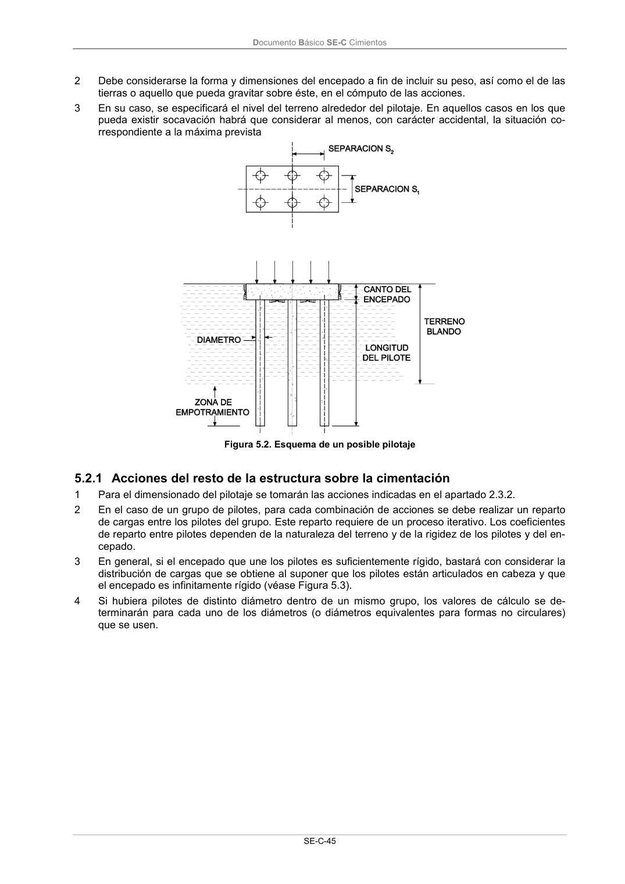

DB-SE-C Cimientos · edición 2019-12-20 · capa oficial
Documento DB-SE-C-oficial · SHA-256 del PDF a71133f4b0dca253e45ea3071c70f2a512354bcc5cd841bf89b1a502f567ac5e
Copia fiel del PDF fuente · Fuente oficial
Ficha de la disposición en la fuente oficial
Formatos: JSON del segmento · Markdown
Acciones a considerar 1 Además de las acciones de la estructura sobre la cimentación se tendrá en cuenta que los pilotes puedan estar sometidos a efectos “parásitos” inducidos por acciones derivadas por el movimiento del propio terreno de cimentación. Documento Básico SE-C Cimientos SE-C-45 2 Debe considerarse la forma y dimensiones del encepado a fin de incluir su peso, así como el de las tierras o aquello que pueda gravitar sobre éste, en el cómputo de las acciones. 3 En su caso, se especificará el nivel del terreno alrededor del pilotaje. En aquellos casos en los que pueda existir socavación habrá que considerar al menos, con carácter accidental, la situación co- rrespondiente a la máxima prevista Figura 5.2. Esquema de un posible pilotaje
